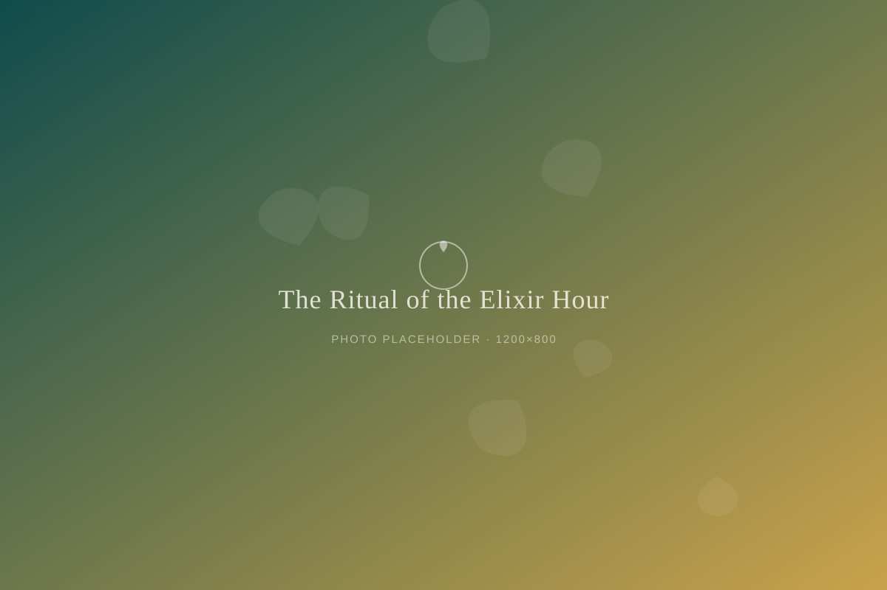

Rituals
The Ritual of the Elixir Hour

A happy hour without the hangover
Every night at five, something shifts at Vine & Sunset. The lights come down half a notch. Someone puts a record on. And the bar starts pouring what we call elixir hour: an hour of botanical drinks, muddled herbs, and slow conversation. It looks a little like a happy hour. It feels like something else entirely.
We didn't invent the idea of a ritual drink at the end of the day. People have been doing that for as long as there have been days to end. What we changed was the ingredient list. Instead of wine or whiskey, you'll find hibiscus and clove, ginger and lemon balm, tonics steeped for hours in the back kitchen. The ritual stayed. The alcohol didn't have to.
Why we needed this hour
When we opened Vine & Sunset, we kept hearing the same thing from people in Akron: they missed having somewhere to go after work that wasn't a bar, but wasn't nothing, either. Home is fine. Home is also where the to-do list lives. People wanted a in-between place, somewhere to set the day down before picking up the evening.
Elixir hour became our answer. It's not a happy hour built to sell more drinks in less time. It's the opposite, really. We slow the pace down on purpose. The bartenders take their time building each glass. Regulars linger. Strangers start talking because there's nowhere else they need to be.
What's actually in the glass
Our elixirs rotate with the seasons, but they always start with something real: fresh-pressed juice, loose-leaf tea, herbs from local growers when we can get them. A few are fizzy and bright, built for a hot Akron evening. Others are warm and a little bitter, the kind of drink that asks you to slow your sip. None of them are trying to taste like the cocktail they replaced. They're just trying to taste good, and to make you want to stay a while.
The part people notice most
What surprises first-time visitors isn't the drinks. It's how normal it feels to be there without a drink that has alcohol in it. Nobody asks why you ordered what you ordered. Nobody's watching your glass. After an hour on a Tuesday evening surrounded by strangers who don't seem to be performing anything, most people tell us the same thing on their way out: this is where I belong.
That's the whole point of elixir hour. Not the absence of alcohol, but the presence of everything else a good gathering needs — time, warmth, and a reason to stay past your first drink.
Come find out what an hour without the rush feels like. Elixir hour runs every evening at Vine & Sunset.